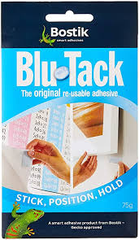

|
For people scared of pointy things, I guess, there's this stuff. Faux tacks. Tack hacks. Tricky sticky. Also useful if you must keep your office supplies in your carry-on, and you don't want a hassle from the TSA. Though it would look even more dangerous to anyone who watched one-too-many Mission Impossibles. |
 |